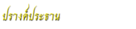
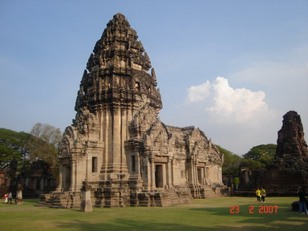

|  | ปรางค์ประธานภายในวงล้อมของระเบียงคด คือ บริเวณลานชั้นในเป็นที่ตั้งของอาคารศาสนาสถานหลายองค์ด้วยกันที่ตั้งอยู่ตรงกลางลาน คือ ปรางค์ประธาน ซึ่งเป็นสถาปัตยกรรมหลักและเป็นศูนย์กลางของศาสนสถาน ทั้งนี้ ปรางค์ประธานสร้างด้วยหินทรายสีขาว หันหน้าไปทางทิศใต้ ประกอบด้วยองค์ปรางสูง 28 เมตร ฐานรูปสี่เหลี่ยมจัตุรัสย่อมุมกว้าง 22 เมตร มีมุข 3 ด้าน และมณฑป คือ ห้องรูปสี่เหลี่ยมผืนผ้าขนาด 8x15 เมตร เชื่อมต่อกับองค์ปรางค์ทางด้านหน้าโดยมีฉนวนคั้นมีมุขเล็ก ๆ 3 ด้าน เช่นเดียวกัน ซึ่งทั้งองค์ปรางค์และมณฑปตั้งอยู่บนฐานเดียวกัน ประกอบด้วยฐานเขียงและฐานบัวเป็นชั้น ๆ แต่ละชั้นสลักลวดลายต่าง ๆ เช่น ลายกลีบบัวลายประจำยาม เฉพาะองค์ปรางค์สลักลวดลายสูงขึ้นมาจนถึงผนังของเรือนธาตุ ซึ่งได้แก่ส่วนกลางขององค์ปรางค์ถัดจากส่วนฐานขึ้นมา มีลักษณะเป็นอาคารรูปสี่เหลี่ยมจัตุรัสย่อมุม มีมุขยื่นออกไปทางด้านทิศตะวันออก ทิศเหนือ และทิศตะวันตก หน้ามุขทั้ง 3 ด้านมีบันไดและประตูขึ้นสู่องค์ปรางค์ภายในอาคารมีห้องสี่เหลี่ยมอยู่ตรงกลางเรียกว่าห้องครรภคฤหะใช้เป็นที่ประดิษฐานรูปเคารพที่สำคัญที่สุดของศาสนสถานถัดจากเรือนธาตุขึ้นไป คือ ส่วนยอด หรือเรือนยอด ซึ่งก็คือส่วนหลังคา แต่เป็นหลังคาที่ทำเป็นชั้น ๆ ลดหลั่นกันขึ้นไปอย่างที่เรียกว่าชั้นเชิงบาตรรวม 5 ชั้น ที่เชิงหลังคามีรูปสลักเป็นครุฑแบกอยู่ตรงกลางทั้ง 4 ทิศ ชั้นเหล่านี้มีลักษณะคล้ายรูปจำลองอาคารสี่เหลี่ยมจัตุรัสที่ย่อมุมเข้าไปมา และลดขนาดเล็กลงตามลำดับ ทำให้มองเห็นเป็นทรงพุ่ม แต่ละชั้นแกะสลักเลียนแบบซุ้มประตูอยู่ตรงกลางทั้ง 4 ด้าน และประดับโดยรอบด้วยกลีบขนาดปรางค์สลักเป็นรูปเทพต่าง ๆ มีเทพประจำทิศอยู่ตรงกลางของแต่ละด้าน และมีเศียรนาคอยู่ที่มุมกลางของแต่ละมุมเหนือชั้นเชิงบาตรชั้นสุดท้ายคือยอดบนสุดสลักเป็นรูปดอกบัว ส่วนอื่น ๆ ของปรางค์ประธาน ได้แก่ มุขปรางค์ และมณฑป ล้วนมุงหลังคาด้วยแผ่นหินสลักเป็นลอนเลียนแบบกระเบื้องดินเผาซ้อนเหลื่อมกันขึ้นไปเป็นรูปโค้งลดขั้น ประดับสันหลังคาด้วยบราลี ด้านในของหลังคารวมทั้งหลังคาองค์ปรางค์ ที่หน้ามุขปราสาทด้านทิศเหนือ มีเสาหินทรายขนาดใหญ่ตั้งอยู่ข้างละ 1 ต้น (จรรยา มาณะวิท และระวิวรรณ บุญญศาสตร์พันธุ์, 2542: 42-45 ; กรมศิลปากร, 2552: 48-54) |